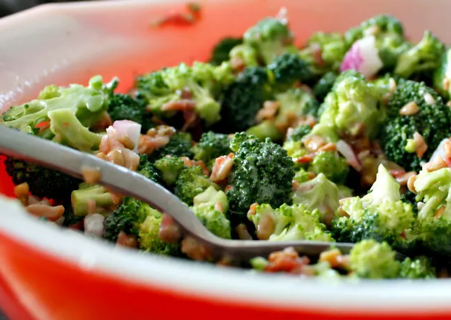

Broccoli Salad

Description
The creamy salad makes for the perfect side dish or light meal — and you can dress it up or down however you like. Plus, with all the other ingredients, even the picky eaters will love this green-filled dish. There's a reason this broccoli salad has over 1300 5-star reviews. It's that good.
Ingredients
- Broccoli
- Bacon
- Onions
- Raisins
- Nuts
- Mayonnaise
- Sugar
- Vinegar
Steps
- Place bacon in a deep skillet and cook over medium-high heat until evenly brown, 7 to 10 minutes; drain, cool, and crumble.
- Combine bacon, broccoli, onion, raisins, and almonds together in a bowl; mix well.
- To prepare the dressing: Mix mayonnaise, sugar, and vinegar together until smooth.
- Stir into the salad. Let chill before serving, if desired.